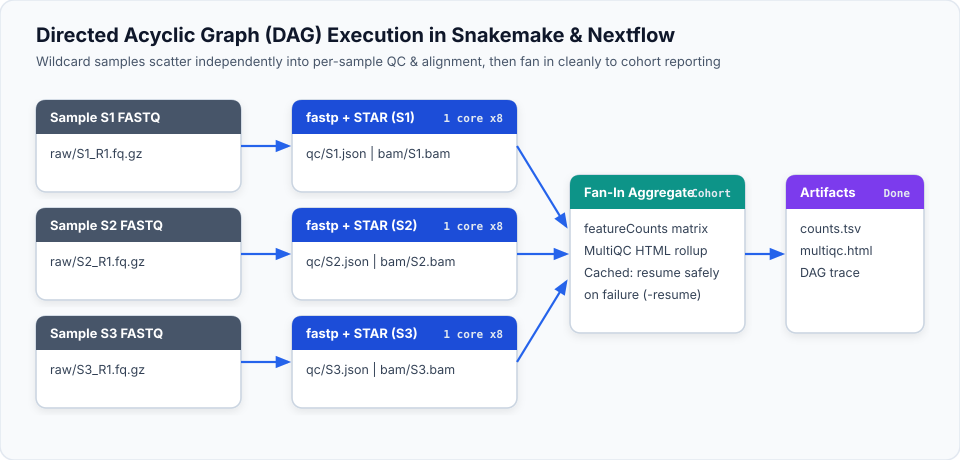

Reproducible Workflows: Snakemake and Nextflow
Nasir Mahmood Abbasi, PhD
Bioinformatics Educator
A workflow makes file dependencies explicit so a runner can determine what must run, what can run in parallel, and what outputs are missing. This walkthrough compares Snakemake and Nextflow, then builds a small file-copy workflow you can adapt before connecting real sequencing tools.
Format: Hands-on lab. Build minimal local test inputs and run side-by-side Snakemake and Nextflow DAG workflows so you can see how targets, wildcards, and resume caching behave.
Scope and prerequisites. You should be comfortable with shell commands, paths, and the idea that each analysis step consumes files and produces files. Install either Snakemake or Nextflow in an isolated environment, and check its current installation guide. The examples below use text fixtures, not biological data; they teach workflow mechanics only.
R remains the main language for analysis steps in this collection. A workflow can call a reviewed R script with Rscript --vanilla and render an R Markdown report as a later step. The definitions below must still use the manager's native syntax: Snakemake's Python-based rule language and Nextflow's Groovy-based DSL. They are not alternative R/Python implementations of a biological analysis.
Start with the file contract
Write down each step as an input-to-output contract before choosing a workflow manager. For a two-step analysis, the contract might be: raw reads plus a reference produce an alignment; the alignment plus an annotation produce a count table. Record the exact filenames, sample identifiers, software versions, parameters, and expected outputs. A workflow cannot correct a mismatched sample sheet, an incomplete reference, or an inappropriate biological method.

Shell scripts work well for quick one-off steps, yet as sample counts grow, implicit working directories and half-written outputs become brittle. Workflow engines track explicit input-to-output dependencies and resume safely after interruptions, though always check output contents alongside timestamps.
A two-step multi-sample Snakemake workflow
Snakemake builds a directed acyclic graph (DAG) backward from requested target files (rule all) to raw inputs using filename wildcards. To see real workflow scheduling rather than a single file copy, the Snakefile below processes two sample fixtures (sampleA and sampleB) in parallel (summarize_sample), declares per-rule software environments (conda:) and Slurm-ready compute budgets (threads and resources), and then aggregates all sample outputs in a fan-in rule (merge_cohort):
SAMPLES = ["sampleA", "sampleB"]
rule all:
input:
"results/cohort_line_counts.tsv"
rule summarize_sample:
input:
txt="data/{sample}.txt"
output:
tsv="results/per_sample/{sample}.lines.tsv"
log:
"logs/summarize_{sample}.log"
conda:
"envs/coreutils.yaml"
threads: 1
resources:
mem_mb=1000,
runtime=10
shell:
"""
mkdir -p results/per_sample logs
lines=$(wc -l < {input.txt:q})
printf '%s\t%s\n' {wildcards.sample:q} "$lines" > {output.tsv:q} 2> {log:q}
"""
rule merge_cohort:
input:
expand("results/per_sample/{sample}.lines.tsv", sample=SAMPLES)
output:
"results/cohort_line_counts.tsv"
resources:
mem_mb=500,
runtime=5
shell:
"""
printf 'sample_id\tline_count\n' > {output:q}
cat {input:q} >> {output:q}
"""
Save this as Snakefile, create data/sampleA.txt and data/sampleB.txt, and preview the 3-job DAG with snakemake -n -p before running snakemake --cores 2 (or snakemake --cores 2 --sdm conda in Snakemake 8+).
Because merge_cohort requests expand("results/per_sample/{sample}.lines.tsv", sample=SAMPLES), Snakemake runs both summarize_sample jobs concurrently on two cores and aggregates them afterward. On Slurm, those same threads and resources map directly via snakemake --executor slurm --jobs 20 (see HPC Job Submission).
Before adapting the rule: confirm that every output path is unique per sample, every input exists, and the command really creates the file declared under output. A command that exits successfully while leaving a truncated file can still mislead downstream steps.
Dry runs and failures
Use snakemake -n before a larger run to inspect the jobs Snakemake plans to execute without running them. A missing input should stop rule planning or execution with an informative error. If a result is unexpectedly considered current, inspect the target, input paths, timestamps, and whether the rule fully declares the files it creates. A dry run checks the planned graph; it does not validate the scientific suitability of the commands.
How Nextflow represents the same work
Nextflow describes processes and connects their inputs and outputs through channels. A channel carries values or file paths; a process declares what it consumes, the command to run, and what it emits. This dataflow model differs in emphasis from Snakemake's file-target graph, although both tools can express multi-step, parallel workflows. The following small DSL2 example copies the same kind of plain-text fixture; it demonstrates process input/output staging and publication, not a biological analysis.
Run the matching text-fixture workflow
Use Bash, Nextflow, and a Java release supported by your installed Nextflow version; this text fixture was checked with Nextflow 26.10.3 and Java 21 on Ubuntu Linux. Check java -version and nextflow info first; follow the official installation guide if either command is unavailable. Starting from your working directory, create a separate project and save the following Groovy script there as main.nf:
mkdir -p nextflow-demo/data
cd nextflow-demo
printf 'fixture text for workflow practice\n' > data/demo.txtparams.input = 'data/demo.txt'
process COPY_FIXTURE {
publishDir 'results', mode: 'copy'
input:
path source
output:
path 'copied.txt'
script:
"""
cp "$source" copied.txt
"""
}
workflow {
source_ch = channel.fromPath(params.input, checkIfExists: true)
COPY_FIXTURE(source_ch)
}Run nextflow run main.nf. In the process, source is the staged path for the file found by channel.fromPath; cp "$source" copied.txt writes the declared output in the task directory. The publishDir 'results', mode: 'copy' directive copies that declared output to results/copied.txt in the launch directory.
Success check: run cmp -- data/demo.txt results/copied.txt. It should print nothing and return exit status 0: the result has exactly the input bytes. This checks copying and publication, not the suitability of a biological analysis.
Try one failure: run nextflow run main.nf --input data/missing.txt. It should fail before the process runs and name the missing path. This command does not rename or delete the original input; rerun the original command to use data/demo.txt again.
Nextflow records task cache entries on each run, but reuses them only when you explicitly pass -resume. Use nextflow run main.nf -resume to request reuse when the task is eligible; keep the associated cache and work directories. See the official caching and resuming guide and publication directive reference.
For a real read-mapping workflow, declare explicitly whether reads are single-end or paired-end and keep both mates bound to their sample identifier as a single unit (for example, using Channel.fromFilePairs('data/*_R{1,2}.fastq.gz', checkIfExists: true) in Nextflow or paired data/{sample}_R1.fastq.gz and data/{sample}_R2.fastq.gz inputs in Snakemake). When wrapping an existing command-line tool, test it on one sample outside the workflow engine first, then encode the exact inputs, container or Conda environment directive, thread/memory resources, and output files in the rule or process definition.
Choose by workflow architecture: Snakemake vs Nextflow
| Dimension | Snakemake (Molder et al., 2021) | Nextflow DSL2 (Di Tommaso et al., 2017) |
|---|---|---|
| Scheduling model | Pull-based backward chaining: starts from requested target paths (rule all) and resolves upstream rules via filename wildcards. | Push-based dataflow: channels emit items or tuple val(sample_id), path(reads) objects into downstream processes as soon as upstream tasks finish. |
| Working directory & staging | Runs in the project working tree writing directly to declared paths; metadata and Conda prefixes live under .snakemake/. | Runs every task inside an isolated hash directory (work/ab/cdef123.../) with symlinked inputs; copies selected outputs via publishDir. |
| Resume semantics | Skips rules whose outputs exist and are newer than inputs (plus code/param provenance checks in Snakemake 8+); re-evaluates automatically. | Re-runs from scratch by default unless you pass -resume, which matches cached task hashes in work/. |
| Software & HPC directives | Per-rule conda: "envs/tool.yaml" or container: "docker://..." plus threads: and resources: mem_mb=..., runtime=...; Slurm via --executor slurm. | Per-process conda or container 'quay.io/biocontainers/...' plus cpus, memory, time; Slurm via process.executor = 'slurm' in nextflow.config. |
Consider Snakemake when your analysis naturally centers on predictable directory trees, R/Python custom scripts, and file-target wildcards.
Consider Nextflow (or nf-core) when sample sheets drive complex multi-branch channel routing across local workstations, Slurm clusters, and cloud object stores, or when a peer-reviewed nf-core pipeline (Ewels et al., 2020) already matches your assay.
Neither choice guarantees biological validity on its own. Version-control the workflow and configuration, pin container digests or Conda lockfiles, and retain run logs and output checksums.
Running an nf-core pipeline safely
Pin exact nf-core/rnaseq releases with -r (for example nextflow run nf-core/rnaseq -r 3.14.0 -profile test,singularity --outdir results_test) after checking the samplesheet and GTF/FASTA requirements in that release's docs. A green -profile test run checks container and scheduler mechanics before you point the pipeline at your real samplesheet and genome build.
Practice and self-check
Exercise: test a two-sample dependency graph
- Create
data/sampleA.txt(3 lines) anddata/sampleB.txt(5 lines), runsnakemake -n -pto inspect the 3-job DAG, and then runsnakemake --cores 2(omitting or commentingconda:if testing with system coreutils). - Add
"sampleC"toSAMPLESwithout creatingdata/sampleC.txt, runsnakemake -n, and verify that planning halts withMissingInputExceptionbefore touching existing outputs. - Create
data/sampleC.txt, rerun, and verify that Snakemake runssummarize_sampleonly forsampleCbefore updatingmerge_cohort.
Check your reasoning: incremental re-execution proves dependency tracking, not read quality, strand orientation, or alignment accuracy.
References and further reading
- Molder, F., Jablonski, K. P., Letcher, B., et al. (2021). Sustainable data analysis with Snakemake. F1000Research, 10, 33. doi:10.12688/f1000research.29032.2
- Di Tommaso, P., Chatzou, M., Floden, E. W., et al. (2017). Nextflow enables reproducible computational workflows. Nature Biotechnology, 35, 316-319. doi:10.1038/nbt.3820
- Ewels, P. A., Peltzer, A., Fillinger, S., et al. (2020). The nf-core framework for community-curated bioinformatics pipelines. Nature Biotechnology, 38, 276-278. doi:10.1038/s41587-020-0439-x
- Snakemake tutorial, Nextflow documentation, and nf-core/rnaseq usage
Validation boundary: the displayed Nextflow text fixture was executed with Nextflow 26.10.3 (build 14229) and Java 21 on Ubuntu Linux; exact-byte publication and missing-input failure were checked. The Snakemake example was not executed in this revision, and no biological workflow was run. Record your own operating system, snakemake --version and/or nextflow info, and java -version before adapting the examples. Report failures with command and version details through the Contact page.
Author: Nasir Mahmood Abbasi, PhD - Category: Workflow Management and Containerization